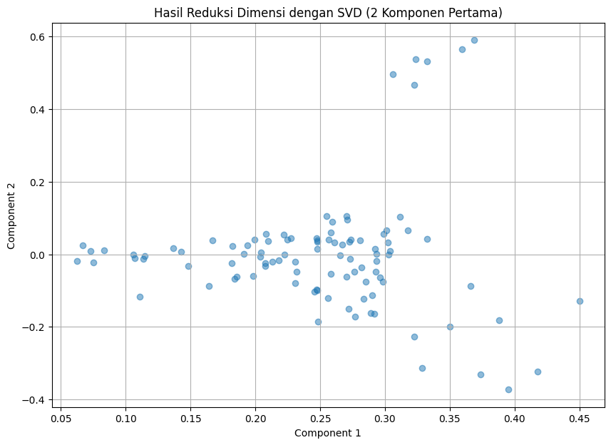

Tugas 5 : Query dengan kalimat#
NAMA : Mohammad Iqbal Surya Ramadhan
NIM : 210411100002
MATA KULIAH : Pencarian dan Penambangan Web - A
mencari 100 dokumen itu (masukkan 1 kalimat, ketemunya dokumen yg mana)
data tfidf ditransofrmasi menjadi sdikit dimensi menggunakan svd yg diambil v dan sigma (v tdk diambil smua)(Sebagian dri v) mentransformasi supaya dikit kolom
cosinus similtas (mirip mendekati 1) boleh pke euclidean
from google.colab import drive
drive.mount('/content/drive')
---------------------------------------------------------------------------
KeyboardInterrupt Traceback (most recent call last)
<ipython-input-1-d5df0069828e> in <cell line: 2>()
1 from google.colab import drive
----> 2 drive.mount('/content/drive')
/usr/local/lib/python3.10/dist-packages/google/colab/drive.py in mount(mountpoint, force_remount, timeout_ms, readonly)
98 def mount(mountpoint, force_remount=False, timeout_ms=120000, readonly=False):
99 """Mount your Google Drive at the specified mountpoint path."""
--> 100 return _mount(
101 mountpoint,
102 force_remount=force_remount,
/usr/local/lib/python3.10/dist-packages/google/colab/drive.py in _mount(mountpoint, force_remount, timeout_ms, ephemeral, readonly)
135 )
136 if ephemeral:
--> 137 _message.blocking_request(
138 'request_auth',
139 request={'authType': 'dfs_ephemeral'},
/usr/local/lib/python3.10/dist-packages/google/colab/_message.py in blocking_request(request_type, request, timeout_sec, parent)
174 request_type, request, parent=parent, expect_reply=True
175 )
--> 176 return read_reply_from_input(request_id, timeout_sec)
/usr/local/lib/python3.10/dist-packages/google/colab/_message.py in read_reply_from_input(message_id, timeout_sec)
94 reply = _read_next_input_message()
95 if reply == _NOT_READY or not isinstance(reply, dict):
---> 96 time.sleep(0.025)
97 continue
98 if (
KeyboardInterrupt:
import pandas as pd
df = pd.read_csv("/content/drive/My Drive/PPWA/report/Tugas-PPWA/Hasil_Prepros.csv")
df.head()
| judul | tanggal | isi | kategori | cleansing | case_folding | tokenize | stopword_removal | |
|---|---|---|---|---|---|---|---|---|
| 0 | Nunggak 8 Bulan, Segini Pajak Ford Mustang Mil... | Kamis, 19 Sep 2024 13:05 WIB | Jakarta - Bareskrim Polri menyita aset senilai... | Otomotif | Jakarta Bareskrim Polri menyita aset senilai ... | jakarta bareskrim polri menyita aset senilai ... | ['jakarta', 'bareskrim', 'polri', 'menyita', '... | jakarta bareskrim polri menyita aset senilai r... |
| 1 | Bos Ford Kaget usai Jajal Mobil China: Mereka ... | Kamis, 19 Sep 2024 12:33 WIB | Jakarta - Chief Executive Officer (CEO) Ford, ... | Otomotif | Jakarta Chief Executive Officer CEO Ford Jim ... | jakarta chief executive officer ceo ford jim ... | ['jakarta', 'chief', 'executive', 'officer', '... | jakarta chief executive officer ceo ford jim f... |
| 2 | Tarif Tol Dalam Kota Naik Jadi Segini, Berlaku... | Kamis, 19 Sep 2024 12:08 WIB | Jakarta - Jasa Marga mengumumkan kenaikan tari... | Otomotif | Jakarta Jasa Marga mengumumkan kenaikan tarif... | jakarta jasa marga mengumumkan kenaikan tarif... | ['jakarta', 'jasa', 'marga', 'mengumumkan', 'k... | jakarta jasa marga mengumumkan kenaikan tarif ... |
| 3 | Pak RT Aleix Espargaro Tak Sabar Balapan Terak... | Kamis, 19 Sep 2024 11:40 WIB | Jakarta - Pebalap Aprilia asal Spanyol, Aleix ... | Otomotif | Jakarta Pebalap Aprilia asal Spanyol Aleix Es... | jakarta pebalap aprilia asal spanyol aleix es... | ['jakarta', 'pebalap', 'aprilia', 'asal', 'spa... | jakarta pebalap aprilia spanyol aleix espargar... |
| 4 | Angkot Listrik Bakal Diuji Coba di Jakarta | Kamis, 19 Sep 2024 11:18 WIB | Jakarta - PT Transportasi Jakarta (TransJakart... | Otomotif | Jakarta PT Transportasi Jakarta TransJakarta ... | jakarta pt transportasi jakarta transjakarta ... | ['jakarta', 'pt', 'transportasi', 'jakarta', '... | jakarta pt transportasi jakarta transjakarta k... |
# 2. Preprocessing sederhana (contoh: lowercasing)
berita_preprocessed = [kalimat.lower() for kalimat in df.cleansing]
# 3. TF-IDF
from sklearn.feature_extraction.text import TfidfVectorizer
import pandas as pd
tfidf_vectorizer = TfidfVectorizer()
tfidf_matrix = tfidf_vectorizer.fit_transform(berita_preprocessed)
# Mendapatkan fitur (kata-kata) dari TF-IDF
tfidf_features = tfidf_vectorizer.get_feature_names_out()
# Mengonversi matriks TF-IDF menjadi DataFrame agar lebih mudah dibaca
tfidf_df = pd.DataFrame(tfidf_matrix.toarray(), columns=tfidf_features)
# Tampilkan hasil TF-IDF
print("\nHasil TF-IDF dalam bentuk DataFrame:")
print(tfidf_df)
Hasil TF-IDF dalam bentuk DataFrame:
abang abdullah abs absen ac acara acaraacara acc accord \
0 0.0 0.0 0.0 0.0 0.000000 0.0 0.0 0.0 0.0
1 0.0 0.0 0.0 0.0 0.000000 0.0 0.0 0.0 0.0
2 0.0 0.0 0.0 0.0 0.000000 0.0 0.0 0.0 0.0
3 0.0 0.0 0.0 0.0 0.000000 0.0 0.0 0.0 0.0
4 0.0 0.0 0.0 0.0 0.107294 0.0 0.0 0.0 0.0
.. ... ... ... ... ... ... ... ... ...
95 0.0 0.0 0.0 0.0 0.000000 0.0 0.0 0.0 0.0
96 0.0 0.0 0.0 0.0 0.000000 0.0 0.0 0.0 0.0
97 0.0 0.0 0.0 0.0 0.000000 0.0 0.0 0.0 0.0
98 0.0 0.0 0.0 0.0 0.000000 0.0 0.0 0.0 0.0
99 0.0 0.0 0.0 0.0 0.000000 0.0 0.0 0.0 0.0
acdkil ... zenix zero zhejiang ziko zimbabwe zona zoning zs \
0 0.0 ... 0.0 0.000000 0.0 0.0 0.0 0.0 0.0 0.0
1 0.0 ... 0.0 0.000000 0.0 0.0 0.0 0.0 0.0 0.0
2 0.0 ... 0.0 0.000000 0.0 0.0 0.0 0.0 0.0 0.0
3 0.0 ... 0.0 0.000000 0.0 0.0 0.0 0.0 0.0 0.0
4 0.0 ... 0.0 0.000000 0.0 0.0 0.0 0.0 0.0 0.0
.. ... ... ... ... ... ... ... ... ... ...
95 0.0 ... 0.0 0.000000 0.0 0.0 0.0 0.0 0.0 0.0
96 0.0 ... 0.0 0.000000 0.0 0.0 0.0 0.0 0.0 0.0
97 0.0 ... 0.0 0.000000 0.0 0.0 0.0 0.0 0.0 0.0
98 0.0 ... 0.0 0.000000 0.0 0.0 0.0 0.0 0.0 0.0
99 0.0 ... 0.0 0.031358 0.0 0.0 0.0 0.0 0.0 0.0
zulkifli zz
0 0.000000 0.0
1 0.000000 0.0
2 0.000000 0.0
3 0.000000 0.0
4 0.000000 0.0
.. ... ...
95 0.000000 0.0
96 0.000000 0.0
97 0.074101 0.0
98 0.000000 0.0
99 0.000000 0.0
[100 rows x 5925 columns]
# Menggunakan SVD untuk reduksi dimensi
import matplotlib.pyplot as plt # import matplotlib for visualization
from sklearn.decomposition import TruncatedSVD # Import TruncatedSVD
# Menggunakan SVD untuk reduksi dimensi
n_components = 10 # Jumlah komponen yang ingin digunakan
svd = TruncatedSVD(n_components=n_components)
svd_matrix = svd.fit_transform(tfidf_matrix)
# Mengubah hasil SVD menjadi DataFrame untuk kemudahan
svd_df = pd.DataFrame(svd_matrix, columns=[f'Component {i+1}' for i in range(n_components)])
# Menampilkan hasil
print("Hasil reduksi dimensi dengan SVD:")
print(svd_df.head()) # Menampilkan 5 baris pertama dari hasil SVD
# Visualisasi hasil untuk 2 komponen pertama
plt.figure(figsize=(10, 7))
plt.scatter(svd_df['Component 1'], svd_df['Component 2'], alpha=0.5)
plt.title('Hasil Reduksi Dimensi dengan SVD (2 Komponen Pertama)')
plt.xlabel('Component 1')
plt.ylabel('Component 2')
plt.grid()
plt.show()
Hasil reduksi dimensi dengan SVD:
Component 1 Component 2 Component 3 Component 4 Component 5 \
0 0.288823 -0.161579 0.159360 -0.102536 0.012820
1 0.271996 -0.151075 0.039268 0.122868 0.023846
2 0.208471 0.057110 -0.038819 -0.445492 0.560430
3 0.258440 -0.053829 -0.294340 -0.057445 -0.225661
4 0.231934 -0.048862 -0.038915 0.066702 0.016492
Component 6 Component 7 Component 8 Component 9 Component 10
0 -0.004076 0.150679 0.141640 -0.210013 0.240326
1 0.058164 0.067774 0.141800 -0.121283 0.050399
2 0.541190 0.009041 -0.060198 0.074419 -0.051876
3 0.106812 0.009572 -0.163505 -0.005372 -0.114899
4 0.016621 -0.090944 0.107947 -0.009786 -0.046015

import re
# Kalimat query
query = """jakarta sedikit beranggapan orang berbadan kurus bebas risiko kolesterol tinggi dibandingkan orang berbadan gemuk ssudah punya kolesterol tinggi sebenarnya anggapan tersebut benar adanyaspesialis penyakit dr aru ariadno sppdkgeh menjelaskan pernyataan tersebut sepenuhnya tepat mengatidakan sebenarnya banyak faktor membuat kadar kolesterol tubuh seseorang naik pola makan buruk kurangnya olahraga memang menjadi faktor utama kolesterol tinggi faktor seperti genetik seseorang berpengaruh advertisement scroll to continue with content kolesterol hubungannya genetik orang kurus mengalami gangguan kolesterol kata dr aru dihubungi detikcom rabu orang memiliki badan gemuk obesitas memang lebih rentan masalah kolesterol tinggi hanya hipertensi masalah obesitas bisa berdampak kesehatan manusia umum ditangani baik baca sederet gejala kolesterol tinggi bisa muncul priaselain berat badan berlebih kerap dikaitkan pola makan tinggi lemak kurangnya aktivitas fisik mana semakin memperbesar risiko tingginya kolesterol darahketika seseorang mengalami obese bisa menyebabkan sindrom metabolik termasuk diabetes kolesterol tinggi hipertensi ujarnya dr aru mengingatkan kolesterol tinggi paling banyak diakibatkan pola makan buruk jarang berolahraga ini berpengaruh pada semua orang tidak melihat orang tersebut memiliki badan kurus gemuk menurutnya pola hidup sehat menjadi kunci utama pengelolaan kadar kolesterol tubuh jangan lupa menjaga tingkat stres berhenti merokok untuk membantu mencegah masalah kolesterol timbul baca juga sering sakit bagian belakang kepala bisa jadi tanda kolesterol tinggi dokter spesialis saraf stroke bisa dicegah dokter spesialis saraf stroke bisa dicegah avksuc kolesterol tinggi badan kurus gaya hidup sehat sindrom metabolik"""
# Preprocessing: menghapus karakter yang tidak perlu dan merapikan spasi
query_preprocessed = re.sub(r'\s+', ' ', query) # Menghapus spasi berlebih
query_preprocessed = query_preprocessed.strip() # Menghapus spasi di awal dan akhir
query_preprocessed = re.sub(r'\n+', ' ', query_preprocessed) # Menghapus newline
query_preprocessed = re.sub(r'-+', '-', query_preprocessed) # Mengganti banyak dash menjadi satu
# Mengubah ke huruf kecil
query_preprocessed = query_preprocessed.lower()
# Menampilkan hasil
print("Berita yang sudah dirapikan:")
print(query_preprocessed)
Berita yang sudah dirapikan:
jakarta sedikit beranggapan orang berbadan kurus bebas risiko kolesterol tinggi dibandingkan orang berbadan gemuk ssudah punya kolesterol tinggi sebenarnya anggapan tersebut benar adanyaspesialis penyakit dr aru ariadno sppdkgeh menjelaskan pernyataan tersebut sepenuhnya tepat mengatidakan sebenarnya banyak faktor membuat kadar kolesterol tubuh seseorang naik pola makan buruk kurangnya olahraga memang menjadi faktor utama kolesterol tinggi faktor seperti genetik seseorang berpengaruh advertisement scroll to continue with content kolesterol hubungannya genetik orang kurus mengalami gangguan kolesterol kata dr aru dihubungi detikcom rabu orang memiliki badan gemuk obesitas memang lebih rentan masalah kolesterol tinggi hanya hipertensi masalah obesitas bisa berdampak kesehatan manusia umum ditangani baik baca sederet gejala kolesterol tinggi bisa muncul priaselain berat badan berlebih kerap dikaitkan pola makan tinggi lemak kurangnya aktivitas fisik mana semakin memperbesar risiko tingginya kolesterol darahketika seseorang mengalami obese bisa menyebabkan sindrom metabolik termasuk diabetes kolesterol tinggi hipertensi ujarnya dr aru mengingatkan kolesterol tinggi paling banyak diakibatkan pola makan buruk jarang berolahraga ini berpengaruh pada semua orang tidak melihat orang tersebut memiliki badan kurus gemuk menurutnya pola hidup sehat menjadi kunci utama pengelolaan kadar kolesterol tubuh jangan lupa menjaga tingkat stres berhenti merokok untuk membantu mencegah masalah kolesterol timbul baca juga sering sakit bagian belakang kepala bisa jadi tanda kolesterol tinggi dokter spesialis saraf stroke bisa dicegah dokter spesialis saraf stroke bisa dicegah avksuc kolesterol tinggi badan kurus gaya hidup sehat sindrom metabolik
# Transformasi query ke bentuk TF-IDF
query_tfidf = tfidf_vectorizer.transform([query_preprocessed])
# Transformasi TF-IDF ke SVD
query_svd = svd.transform(query_tfidf)
# Mengubah hasil query SVD menjadi DataFrame untuk kemudahan
query_svd_df = pd.DataFrame(query_svd, columns=[f'Component {i+1}' for i in range(n_components)])
# Menampilkan hasil
print("Hasil transformasi query ke SVD:")
print(query_svd_df)
Hasil transformasi query ke SVD:
Component 1 Component 2 Component 3 Component 4 Component 5 \
0 0.110525 0.003002 -0.025577 0.021044 -0.003255
Component 6 Component 7 Component 8 Component 9 Component 10
0 -0.010442 -0.036171 -0.001775 0.025773 0.006688
# Import the required function
from sklearn.metrics.pairwise import cosine_similarity
# Menghitung cosine similarity antara query dan setiap berita
similarity_scores = cosine_similarity(query_svd, svd_matrix)
# Menampilkan nilai cosine similarity
print("Nilai Cosine Similarity antara query dan setiap berita:")
print(similarity_scores)
Nilai Cosine Similarity antara query dan setiap berita:
[[0.23431795 0.50392525 0.07525794 0.52440764 0.83381217 0.53180754
0.16115862 0.77921403 0.85435738 0.50450592 0.43434048 0.87842297
0.17008989 0.84533558 0.92489272 0.53805371 0.43758062 0.02651346
0.36004142 0.61814649 0.62386315 0.58157614 0.69350141 0.77142697
0.32948809 0.48526096 0.56888344 0.34965772 0.73182254 0.30743925
0.64601562 0.62638615 0.92175318 0.76462997 0.35904103 0.6130384
0.76174096 0.86385949 0.31399973 0.70120864 0.33136643 0.78909764
0.83775895 0.79592138 0.28219097 0.78542045 0.37663736 0.49380686
0.23221917 0.63683738 0.07303506 0.67240308 0.64186854 0.26661958
0.73126931 0.74337283 0.4353221 0.18370777 0.78817062 0.28760935
0.84059094 0.33143923 0.76687448 0.76417021 0.77296383 0.7007708
0.407326 0.81643739 0.09587248 0.82922628 0.90605028 0.73911003
0.85854522 0.81799612 0.19569107 0.33220652 0.8214174 0.79680992
0.59416097 0.37782211 0.59557434 0.84937822 0.55565898 0.9610515
0.40115841 0.08160528 0.84278492 0.37364228 0.65086915 0.74940985
0.36860636 0.6989857 0.76547992 0.84576474 0.66962437 0.36209181
0.76813385 0.27699573 0.81779157 0.75786228]]
from sklearn.metrics.pairwise import cosine_similarity
import numpy as np # Import the numpy library
# Mengurutkan indeks berdasarkan skor similarity (descending)
most_relevant_indices = np.argsort(similarity_scores[0])[::-1]
# Memastikan indeks tidak melebihi panjang list berita
num_top_results = 5
top_5_relevant_berita = [(i, df.cleansing[i], similarity_scores[0][i]) for i in most_relevant_indices[:num_top_results] if i < len(df.cleansing)]
# Cetak hasil dengan nilai cosine similarity
print("\nBerita yang paling relevan dengan query beserta nilai cosine similarity:")
for idx, (original_index, berita_text, similarity) in enumerate(top_5_relevant_berita, 1):
# Hanya menampilkan teks berita tanpa karakter yang tidak diinginkan
cleaned_text = berita_text.replace("r", "").replace("s", "").replace("a", "").replace("t", "").strip()
print(f"{idx}. (Nomor Asli: {original_index + 1}) {cleaned_text} - Cosine Similarity: {similarity:.4f}")
Berita yang paling relevan dengan query beserta nilai cosine similarity:
1. (Nomor Asli: 84) Jk Poduen wdh penyimpnn mknn ikonik beui Thun Tuppewe encm bngku dn gulung ik Kini peuhn edng mempeipkn pengjun pili ecepny wlupun encn ini mih belum finl dn bi j beubh Melni BBC Rbu Peiden dn CEO Tuppewe Bnd Copoion Luie Ann Goldmn mengkn bhw meek kn memin izin pengdiln unuk memuli poe penjuln bininy dn ingin peuhn eu beopei elm poe kebngkun belngung Tep ehun yng llu peuhn udh mempeingkn bhw meek mungkin kn bngku keculi jik Tuppewe behil mendpkn pendnn bu dengn cep Tuppewe jug udh beuh unuk mengekn penjuln ke pelnggn yng lebih mud Kmi beencn unuk eu melyni p pelnggn kmi yng behg dengn podukpoduk bekuli inggi yng meek uki dn pecyi elm poe ini uj Luie dikuip di BBC juh lebih di di minggu ini eelh d lpon bhw meek beencn unuk mengjukn kebngkun Tuppewe elh bejung elm behunhun dlm membendung penuunn penjuln podukny Pemilik Tuppewe Melni di iu emi peuhn Tuppewe pem kli didiikn oleh El Sil Tuppe eki hun yng llu I meupkn eong hli kimi yng lhi pd ilm Sejk beui hun Tuppe begbung dengn peuhn yng bebi inovi dn melkukn bebgi ie Di n i behil menemukn meode unuk memunikn mp biji him polyehylene bhn d pembu plik menjdi plik yng flekibel ku idk beminyk bening mn ingn dn idk bebu Kemudin pd khiny Tuppe mendiikn uh plik milikny endii benm El S Tuppe Compny Mellui peuhn iu Tuppe memenkn podukny dengn nm PolyT Bebep hun beelng Tuppe kembli mendp ide unuk membu wdh kedp ud epei kleng c di plik unuk menyimpn mknn Di nlh i kemudin meluncukn poduk Wondelie Bowl dn Bell Tumble dengn meek Tuppewe pd Kini kepemilikn Tuppewe udh ebgi dlm benuk hm Sehingg peuhn ikonik pembu wdh mknn eebu udh dimiliki oleh bnyk ong u peuhn Menuu iu Ndq ini eidkny d eki lembgpeuhn yng memegng hm di Tuppewe Bnd Copoion TUP Kepemilikn iniuionl ini menckup hm peuhn dengn nili US ju Simk Video Shm Tuppewe Meoo Hingg GmbVideo deik fdlfdl - Cosine Similarity: 0.9611
2. (Nomor Asli: 15) Jk Pencin edn Toyo Vio yng egbung dlm Toyo Vio Club Indonei TVCI menginjk ui dekde TVCI meykn hi jdiny yng ke hun dengn menggel jmboe nionl jmn Komuni yng bedii pd Aguu ini elh memiliki nggo hmpi membe dengn ol chpe di eluuh Indonei Jmn TVCI digel eip du hun ekli D hun ini Jmboe Nionl dielenggkn di Bndung Bndung dlh lh u Chpe di Toyo Vio Club Indonei yng mendpkn wd Chpe Tebik pd Jmboe Nionl ebelumny yng dilknkn pd hun di Bli k Bey Sifuddin Keu Umum TVCI Toyo Vio Club Indonei mengimplemenikn vii di Toyo yiu I Time Fo Eveyone Vii ini diujukn bgi ip pun khuuny membe TVCI unuk bi iku bekonibui bem mencpi neli kbon Jmboe Nionl Toyo Vio Club Indonei Foo Dok TVCI Bukn ekd ilhuhmi dn kumpulkumpul pd kegin Jm keemp ini TVCI meykn ui du dekde hun Kmi jug mendukung pemulihn ud beih khuuny di Ko Bndung dengn c cbon neul TVCI mendukung kegin eebu dengn c mennm pohon di eki e emp kmi mengdkn c uj Fid Hum TVCI Jmboe Nionl keemp TVCI ini diikui oleh eluuh membe TVCI Nionl dn kelugny Kegin ini jug eui dengn gline TVCI yiu DARONTUKA Di Oleh dn Unuk Ki Komuni ini memiliki pedomn mengendi kendn dengn eib bellu lin ehingg kegin dp mempee kekelugn TVCI dn membeikn conoh bik dlm bekend Di ui Dekde ini TVCI ingin menjdi klub oomoif yng emkin be TVCI membuk keempn kepd ip pun pemilik Vio unuk menjdi nggony Pendfn bi lew jlu online di lmn emi TVCI Syny hny memiliki Toyo Vio dn puny SIM Klu nni Vio iu dijul kenggon meek idk kn kmi cbu Tpi unuk y egii menjdi nggo hu puny Vio uj Fid gdy - Cosine Similarity: 0.9249
3. (Nomor Asli: 33) Jk PT Plz Auo Meg elku gen pemegng meek Subu di Indonei bkl menyelenggkn Subu XMode Xpeience Nniny c eebu kn diii oleh le moopo yng kn mendein ck off od dn on od unuk membukikn keungguln eknologi Symmeicl AllWheel Dive SAWD dn memikn kemnn eip pelnggn Subu Teknologi Symmeicl AllWheel Dive SAWD yng dipdukn dengn iem XMODE dn mein BOXER ejk Subu menghdikn penglmn bekend eendii dn ng bebed dibndingkn kendn mnpun Kombini mein Boxe dn iem AWD yng imei eebu benben unik menjdi keungguln Subu dn dp lngung dikn mellui edive di ck offod Penglmn menyei Subu iu ng bebed kombini mein Boxe dn Symmeicl AllWheel Dive di Subu benben unik dn menjdi keungguln Subu Ki dlh pbikn yng menggunkn eknologi ini ejk hun dn eu menyempunknny hingg kini lh uny dengn penggunn fungi XMODE yng mkin pin dlm membnu pengemudi menklukn bebgi medn dengn ingk Sfey einggi k Chief Execuive Office Subu Indonei Aie Chiophe dlm keengn euli Rbu Subu XMode Xpeience Foo Subu Di menjelkn c eebu beujun unuk membeikn penglmn bekend ebik kepd clon konumen Subu Unuk iu pening ny kmi menyelenggkn even edive dengn dein ck offod dn onod g clon pelnggn dp mekn kenikmn bekend Subu di emu emu kenio bem le moopo yng memiliki jm ebng di even inenionl uuny Di menjelkn nniny di c yng dielenggkn pd Sepembe di PT Plz Auo Meg bkl diii ejumlh le moopo lly Meek bkl bebgi penglmn kepd ejumlh pengunjung di c eebu Pd Subu XMode Xpeience Sepembe ini PT Plz Auo Meg bekej m dengn Julin John Ziko Hndi dn Dipo Dwiki yng meupkn le moopo lly dn jug dif unuk mendein ue edive yng eu nmun ep mengumkn unu fey unuk emu pee XMode Xpeience jelny Subu XMode Xpeience Foo Subu Aie Chiophe menjelkn c eebu bkl menghdikn ejumlh pogm kepemilikn kendn khuu P pee jug bi mendpkn penwn menik epei vouche MAP dn linny Ac Subu XMode Xpeience kn dilknkn pd khi pekn ini nggl Sepembe dengn iik kumpul di Bule Sek BSD Ciy Tedp pogm kepemilikn kendn khuu bgi pee yng mengikui kel offod bem Julin John epei pke pelengkpn oudoo di KZM enili Rp vouche MAP enili Rp u penwn khuu unuk dein dengn Subu Oubck enili Rp uupny ncmeg - Cosine Similarity: 0.9218
4. (Nomor Asli: 71) Jk Menei Keengkejn Id Fuziyh bebep wku llu memin peuhn Indonei unuk mewujudkn kenymnn bekej np dikimini eui dengn pl dn UU Nomo Thun UU eebu enng Keengkejn yng mengu pelindungn kepd emu pekej lkilki mupun peempun dengn membeikn keempn dn pelkun yng m dlm bekej Id menyebu hl ini elh ejln dengn konep kej lyk unuk emu di mn lh u hk d bgi pekej dlh idk dipelkukn dikiminif dn idk dilecehkn Menuuny bedkn d menunjukkn mih dny nngn dn dikimini bgi pekej peempun di emp kej Unuk iu Id menyebu Kemnke kn membu Pedomn Penceghn dn penngnn keken ekul di emp kej Mellui un eebu nniny peuhn dp menyedikn fili yng mendukung pembedyn peempun di emp kej Sel dengn iu PT Gunbue Nickel Indui GNI jug uu mendoong penyepn eng kej peempun di Moowli U Sulwei Tengg e bebgi upy unuk pembedyn wni di lingkungn kej Bebep wku llu PT GNI mengikui oilii Keehn Kej dn Gekn Pekej Peempun Seh Podukif GPSP yng dielenggkn oleh Din Keehn Kbupen Moowli U Pogm ini beujun ebgi upy peuhn dengn bebgi pihk epei pemeinh myk dn pekej dlm meningkkn kepedulin dn mewujudkn p pekej wni yng eh khuuny di deh Kbupen Moowli U Hed of Copoe Communicion PT GNI Melly Tnoyo menjelkn pihkny mendukung pogm eebu dlm hl keehn dn keelmn kej ken meupkn lh u komimen pening peuhn Sejln dengn pemeinh keehn dn keelmn kej K menjdi lh u pioi kmi Kmi jug mendukung pogm pemeinh yng bekin dengn keehn Kegin ini menjdi buki ny bhw PT Gunbue Nickel Induy memiliki pehin be ehdp pembngunn myk yng bekelnjun dimuli dengn meningkkn kedn eng kej eki keehn ucp Melly dlm keengn dikuip Kmi PT GNI jug kep kli menggel kegin yng behubungn dengn peempun epei Hi Peempun Inenionl pd Me llu Ini menjdi lh u benuk buki peuhn eebu dlm mendukung pembedyn peempun di indui mele Ac ini meupkn lh u benuk upy peuhn unuk dp ellu mempehikn dn menghgi pen p pekej wni di PT GNI Peuhn mellui kebijknkebijkn dn filiny jug beupy unuk membeikn ung bgi pegwi peempun ehingg dp ecip lingkungn kej yng mn dn nymn jel Melly Peuhn mele nikel memiliki pen pening dlm mendukung keempn kej wni Dengn membuk pelung bgi pekej wni peuhn idk hny mempelu bi lenny epi jug bekonibui pd pembngunn oil dn ekonomi yng lebih inkluif Peneimn pekej wni dlm indui ini jug menjdi indiko pening dlm menili komimen peuhn ehdp kebegmn dn inklui S ini lebih di kywn peempun bekej di PT GNI dn eeb di bebgi poii Slh uny dlh Foemn Anli Lb Poduki PT GNI Helen Fid Tomnd yng menyebu diiny dlh pengw wni pem yng ebelumny didomini pi Sy begbung di PT GNI pd Sepembe di Depemen Lb Poduki S iu kywn Lb Poduki didomini oleh kywn lkilki Nmun eelh menjlni poii ini kung lebih buln y dingk oleh n unuk menjdi pengw peempun yng eny dlh pengw peempun pem ucp Helen Menuuny hl iu jug menndkn ingk kepecyn peuhn kepd peempun bik di egi pekejn kepemimpinn e pengmbiln kepuun Tk hny iu hl ini jug menndkn peempun memiliki pelung yng m dengn lkilki dlm mengembngkn ki Pekejn yng duluny hny dilkukn oleh lkilki nmun di GNI peempun jug mendp keempn yng m Conohny epei opeo excvo dn eong upevio kmi dlh peempun pungkny kneg - Cosine Similarity: 0.9061
5. (Nomor Asli: 12) Jk Pepnjng SIM bi dilkukn di Gei SIM Keliling Simk loki SIM keliling Sepembe di Jbodebek beiku Ad bebep opi unuk melkukn pepnjngn SIM bu kmu yng inggl di kwn Jbodebek Slh uny mellui gei SIM Keliling yng eeb di ejumlh wilyh Loki SIM Keliling Jbodebek Nh bgi kmu yng ingin melkukn pepnjngn SIM di SIM keliling enu hu mengehui lokiny Beiku ini loki SIM keliling di Jbodebek Loki SIM Keliling Jk Jk Timu Mll Gnd Ckung jm Jk U LTC Glodok jm Jk Seln Kmpu Tilogi Klib jm Jk B Mll Cilnd jm Jk Pu Kno Po Lpngn Bneng jm Loki SIM Keliling Beki Senin Mcd Hpn Indh jm Sel Pizz Hu Komen Jiih Rbu Meopolin Mll Beki jm Kmi Beki Cybe Pk jm Jum Mi Jimkmu jm Sbu Kno Kecmn Beki B jm Loki SIM Keliling Depok Senin Hond Moo Ce Jl Ry Swngn Pncon M dn Buge King JlRy Bojongi no Depok Sel Po Llu Lin Kukun JlGoong Royong Kukun Beji dn ExRmyn JlRy Bogo Cimnggi Depok Rbu Hyfeh Bojongi JlBojongi no Depok dn Ruko Din Plz JlMeuyung Ko Depok Kmi Seko Meli GDC JlBoulevd Gnd Depok Ciy dn Po Ln Bmbu Kuning JlKmpung Swh Bojonggede Jum Cimnggi Sque JlRy Bogo Cimnggi dn Podo Moo Golf JlRy Bojong Nngk Sbu Po Ln Bmbu Kuning JlKmpung Swh Bojonggede dn Mgo Ciu JlMgond Ry no Depok Loki SIM Keliling Bogo wku pendfn jm Senin Mll BTM Sel Loe Goi Sholeh Iknd Rbu Mll BTW Kmi Mll Boxie Tju Jum Mll Jmbu Du Sbu Mll Jmbu Du Minggu Buge King Pjjn Loki SIM Keliling Tngeng Bu SeninSel Lobi Timu Mll Cipu jm RbuSbu Po Pol Telg Bei jm Bu SeninSel Po Pol Kubumi jm Rbu Lobi Timu Mll Cipu jm Kmi Lobi Timu Mll Cipu jm dn Smne Suvn Sue jm Jum Mi Biung Jy Jm dn Rmyn Cikup jm Sbu P Pui Sm P Kemi jm Sy Pepnjng SIM Unuk pepnjngn SIM d bebep peyn yng hu dibw beiku incinny KTP li dn du lemb fookopi SIM li yng hendk dipepnjng dn lemb fookopi Su keengn keehn Bi dibu di loki pepnjng SIM Hil keengn lulu e pikologi Te ini jug bi dilkukn ec online mellui iu ePPi SIM u pliki ePPSi SIM Fomuli pengjun pepnjngn SIM yng elh diii lengkp dyg - Cosine Similarity: 0.8784